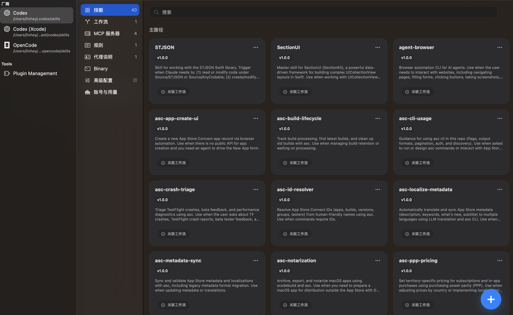

Skills
统一管理技能资产并投射到目标 Provider。
AI 编程工具主控制台
Nolon 在 macOS 上提供统一的主控制台：资源编排、远程安装与 Codex 深度支持并行工作。
左侧 Provider、中央内容标签、右侧详情网格，形成稳定的日常操作路径。

通过叠层资源中心统一浏览并安装 Skills、Workflows、MCP，减少跨 Provider 的重复操作。
统一管理技能资产并投射到目标 Provider。
安装工作流并保持本地与远程一致。
安装与配置 MCP 资源，减少手工配置错误。
内置模板覆盖 7+ Provider，基础能力与 Vendor 扩展能力按标签动态呈现。
Skills / Workflows / MCP 为通用底座。
可按 Provider 能力扩展 Accounts、Usage、Binary、Advanced 等视图。
从账号与用量到二进制与高级配置，Nolon 将 Codex 相关能力集中在可视化控制面。
查看账号状态、用量趋势与关键指标。
查看可用版本并切换使用二进制。
聚合常见高级配置项，降低配置门槛。
结合 CLI/SDK 能力，支持更清晰的运行态排查。
插件管理位于 Tools 分组，为独立页面，不属于 MCP 页面。首期内置 XcodeMCPKit，并支持版本升级检测。
检查 GitHub 稳定版更新（忽略 pre-release），命中后显示 Upgrade 按钮。
插件列表可继续扩展，不干扰现有 Provider/MCP 结构。
核心能力优先下沉到 SDK，再由 CLI 和 App 复用，App 侧聚焦编排与展示。
同时配合迁移助手、链接修复、漂移治理机制，保障长期可维护性。
`projects/leaderboard-template` 提供可 fork 的独立榜单模板，包含提交契约、快照构建与 Pages 发布链路。
支持 GitHub Releases 手动下载，也支持 Sparkle appcast 自动更新链路。
最新稳定版本下载入口。
https://github.com/linhay/nolon/releases/latest应用内更新源。
https://linhay.github.io/nolon/appcast.xml官网与当前仓库内置模板口径保持一致，避免宣传与实现脱节。
不是。插件管理是左侧 Tools 下的独立页面。
它是生态模板项目，面向可 fork 的独立站点能力。